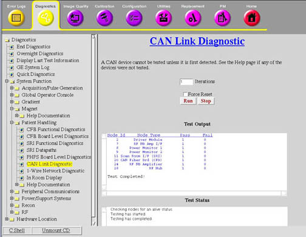

Proprietary to General Electric
Direction 5670000, Rev# 1
Optima MR450w 1.5T Service Methods
Module Version 3.0, Version Date 8/19/08
Proprietary to General Electric |
Diagnostics>>System Functions>>Patient Handling>>CAN Link Diagnostic
Diagnostics>>Hardware Location>>PGR Cabinet>>CAM>>Can Link Diagnostic
Illustration 1: CAN Link Diagnostic

The purpose of this diagnostic is to perform a read-write test on any available nodes on the CAN network.
The Controller Area Network (CAN) is a communications layer used to communicate serially to nodes over a high speed data layer. The CAN network uses a protocol called CANopen to communicate with its peripherals, or nodes. Each node has a unique node ID (1-31) which helps determine where each message is intended to arrive.
This test will determine which nodes are available on the link by listening in to the network and determining which nodes are available based on their Node ID's. Once the nodes are detected, a walking ones pattern is sent to each node and read back to verify the communications link. The test can be set to run several iterations to help find any intermittent failures.
The Force Reset button is available to force a reset of the nodes before running the test. This is used in the case when a reset is required to put all the nodes in a known normal state. The test however, should be first run without the reset to determine if any nodes are in a bad state. The force reset button should be used as a fall back to bring the nodes back to a normal state.
The nodes that are currently available for detection by this test are:
CFB (Node ID 20)
Driver Module (Node ID 2)
ASC BB IF Board (Node ID 6)
ASC NB IF Board (Node ID 7)
ASC RF Processor 1 (Node ID 8)
ASC RF Processor 2 (Node ID 9)
HOS (Node ID 16)
RF Hub (Node ID 28)
RF Amp (Node ID 24)
SRI (Node ID 11)
None
This diagnostic first detects all the available nodes on the CAN link by monitoring the Node Guarding messages.
From the CAN Link Diagnostic page, enter the number of times you want the test to run in the Iterations field.
The test can be set to run several iterations to help find any intermittent failures.
Click [Run].
Once nodes are detected, they are logged to the screen and then a data path test is run on each of them sequentially. The data path test consists of writing a walking one's pattern on the Diagnostic Dictionary Index on the node and reading it back.
The received data is checked to ensure its validity. The data path test is repeated three times on each node. Any errors will result in an error message logged and the information written to the screen.
| NOTE: | If Force Reset is checked, all CAN nodes are reset prior to monitoring the Node Guarding messages. This is used when a reset is required to put all the nodes in a known normal state. The test should be first run without the reset to determine if any nodes are in a bad state. The force reset button should be used as a fall back to bring the nodes back to a normal state. |
This test compares the nodes that are detected against the system configuration and emulation settings. All nodes that are detected, configured, and not emulated are tested and test results display.
A status message displays for any nodes not tested that are detected and/or configured. Here is a list of reasons a node may not be tested.
Not detected
Not detected - Node configured and emulated
Not tested - Node detected but configured and emulated
Not tested - Node detected but emulated
Not tested - Node detected but not configured
If any configuration or emulation result is seen, verify that the configuration of the system is correct and that no emulations exist for that node.
If nodes are not detected, it may be that:
Driver Module powered off
CAN Terminator not installed on the SCP
CAN Terminator not installed on the last node on the CAN link
Not all nodes connected on the CAN link, including SCP, or CAN cable disconnected
System configuration incorrect, if only some nodes not detected
SCP or CAN PMC failures. Run the CAN datapath diagnostic to verify SCP to CAN PMC communication